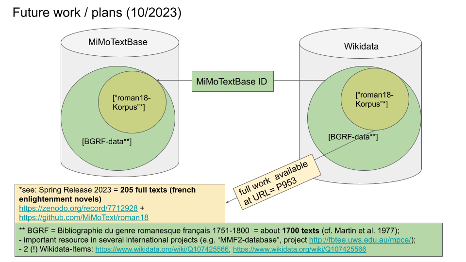

### Linked Open Data for Literary History: <br> Constructing, Querying and Using the MiMoTextBase <img height="60" style="box-shadow:none;" data-src="img/basics/mimotext-logo.png"> <p style="font-size:28px;">Maria Hinzmann and Tinghui Duan</p> <p style="line-height: 1.1; font-size:24px;">with Matthias Bremm, Anne Klee, Johanna Konstancziak,<br> Julia Röttgermann and Christof Schöch</p> <p style="line-height: 1.1; font-size:24px;"><a href="https://mimotext.uni-trier.de/en">Project: https://mimotext.uni-trier.de/en</a></p> <p style="line-height: 1.1; font-size:24px;"><a href="https://mimotext.github.io/lod-lithist/berlin23.html">Slides: https://mimotext.github.io/lod-lithist/berlin23.html</a></p> <!--<p style="line-height: 1.1;"><strong><emph>Wikipedia, Wikidata and Wikibase: Usage Scenarios for Literary Studies, Berlin</emph> | Oct 10-11, 2023</strong></p> --> <P style="line-height: 1.1; font-size:24px;">Workshop FU Berlin, 10th October 2023<br>Wikipedia, Wikidata and Wikibase: Usage Scenarios for Literary Studies</P> <img height="50" style="box-shadow:none;" data-src="img/basics/logo_institution.png"> :: - Hello and welcome to our talk - We're very happy to be here - Our topic is how we used ontologies in the process of building a resource based on linked open data for French literary history - We would like to share our experiences regarding this issue in the project "Mining and Modeling Text" - Maria Hinzmann and me are the main coordinators of "Mining and Modeling Text", run at the Trier Center for Digital Humanities - The funding for this 4-year-project, set to run out at the end of the year, comes from the state of Rhineland-Palatinate, where Trier is located. -- ## Structure 1. [Introduction](#/2) 2. [Mining](#/3) 3. [Modeling](#/4) 4. [MiMoTextBase & Wikidata](#/5) 5. [Examples](#/6) :: - Our plan ist to first provide some background on the project - Then, we will focus on the role of the design and use of ontologies in the project - I will present the first part, Maria Hinzmann will present the second part -- ## (1) Introduction --- #### MiMoText in a nutshell <br> <small> <a href="https://mimotext.uni-trier.de/en">https://mimotext.uni-trier.de/en</a> </small> :: - The object of study in our project is the French novel of the second half of the eighteenth century - In order to collect information about this domain, we use three sources of information - Bibliographic metadata, in our case mainly the "Bibliographie du genre romanesque francais, 1751-1800", by Martin, Mylne and Frautschi - Knowledge compiled by in literary historiography, notably a number of book chapters summarizing the history of the French novel at the time - And, characteristics of the relevant novels themselves, through a corpus of 200 such novels. - The general aim: - Automatically extract relevant information from these sources - Model this information as LOD and linking them as much as possible - Analyse this information in order to learn more about the period's literature, but also on literary historiography. - This also means: turning heterogeneous sources into a homogeneous dataset - This also implies explicitly modeling everything, and of course that is where controlled vocabularies, taxonomies, ontologies and their implementation and usage come into play. --- #### Aims of the project - Our goal: "Wikidata for literary history" <!-- .element: class="fragment" data-fragment-index="1" --> - An information system for literary history - LOD-based, with exploratory interface and SPARQL-endpoint - Sort of an "atomization" of literary history into many small statements - Held together by taxonomies, ontologies, authority files - Compared to Wikidata: <!-- .element: class="fragment" data-fragment-index="2" --> - Much more focused on one domain (French novel 1750-1800) - Better coverage for this domain - Higher density of assertions for this domain - Based on explicit data modeling :: - Both built on data, and enabling literary studies based on data - Important to note that we don't collect facts, but rather statements or perspectives - And of course, we don't provide one overarching narrative or thesis, but a lot of raw but linked and contextualized information -- ## (2) Mining --- ### Source type 1: Bibliographic data <a href="img/bgrf-Candide.png"><img height="400" src="img/bgrf-Candide.png"></img></a> <p>Martin / Mylne / Frautschi: <em>Bibliographie<br/> du genre romanesque français, 1751-1800</em>, 1977</p> --- ### Source type 2: Primary literature (novels) * corpus of 205 french novels (1750-1800) * coded in XML-TEI, with metadata, following the ELTeC schema * methods: e.g. Topic Modeling, NER, stylometry <img height="300" src="img/roman18.jpg"></img> <br/><p>Collection of Eighteenth-Century French Novels (1750-1800)</p> --- ### Source type 3: Scholarly publications <a href="img/inception_Candide-disambiguation.png"><img height="250" src="img/inception_Candide-disambiguation.png"></img></a> * linking annotation tool INCEpTION with Wikidata and MiMoTextBase -> disambiguation via identifier * manual annotation (e.g. statements about themes) and pipeline (export INCEpTION annotations => import Wikibase statements) :: Plan: 3 elements of automated statement extraction * annotation guidelines (based on data model) * manual annotation: generation of training data * training: machine learning (in Python) -- ## (3) Modeling --- #### Ontology - Überblick - Module 1: theme - Module 2: space - Module 3: narrative form - Module 4: literary work - Module 5: author - Module 6: mapping - Module 7: referencing - Module 8: versioning & publication - Module 9: terminology - Module 10: bibliography - Module 11: scholarly work (https://github.com/MiMoText/ontology) --- #### Reification (1) <a href="img/mimotextbase_sources.png"><img height="450" data-src="img/mimotextbase_sources.png"></a> --- #### Reification (2) <a href="img/module7_referencing.png"><img height="450" data-src="img/module7_referencing.png"></a> --- #### Alignment with Wikidata: enabling ‘federated queries’ <a href="img/federated-queries_new.png"></a> -- ## (4) MiMoTextBase & Wikidata --- ### Wikibase as infrastructure --- #### Why using Wikibase? <br><br> - It’s a FOSS! (free open source software) <!-- .element: class="fragment" data-fragment-index="1" --> - Flexible data model <!-- .element: class="fragment" data-fragment-index="2" --> - User-friendly interface <!-- .element: class="fragment" data-fragment-index="3" --> - Linking to Wiki-ecosystem <!-- .element: class="fragment" data-fragment-index="4" --> - Multilingualism <!-- .element: class="fragment" data-fragment-index="5" --> --- #### MiMoTextBase as part of the Wikibase ecosystem <img height="450" data-src="img/wikibase_ecosystem_neu.png"> <p style="line-height: 1.2; font-size: 16px; ">A view of the MiMoTextBase within the Wikimedia Linked Open Data web.<br>Credit original visualization: <a href="https://blogs.tib.eu/wp/tib/2021/11/05/tib-at-wikidatacon-part-1/">Dan Shick (WMDE)</a> / CC-BY-SA 4.0</p> --- #### Connecting MiMoTextBase & Wikidata <a href="img/mimotextbase-wikidata.png"></a> Fig.: Connecting MiMoTextBase - the [roman18 corpus](https://github.com/MiMoText/roman18) - and Wikidata (ongoing) --- #### Multilingualism -- ## (5) Examples --- #### Result: the MiMoTextBase <a href="http://data.mimotext.uni-trier.de/wiki/Main_Page"><img height="450" src="img/mimotextbase.png"></img></a> - http://data.mimotext.uni-trier.de :: - Having all our data triples on French Enlightenment novels and authors stored in our Wikibase instance enables us to query it as a graph. - Start with some examples from the Wikibase "wiki view" - Author: not a lot of information, but: "exact_match" (!) => Wikidata - Title: a lot more information, both modeled and as strings, from various sources; meta-assertions / references - One can do searches here as well, but not in a very targeted manner => SPARQL --- #### The SPARQL endpoint <a href="img/sparql_results1.png"></img></a> - SPARQL = SPARQL Protocol and RDF Query Language - Used to formulate complex queries on LOD - https://query.mimotext.uni-trier.de :: - The DockerWikibaseQueryService interface provides numerous visualization options that allow exploration and analysis of data at different levels of granularity - Currently, we have almost 370.000 triples, so this already opens up many possiblities --- #### Some example queries - Simple queries - [List of novels with information from BGRF](https://query.mimotext.uni-trier.de/#%23%20Query%20to%20retrieve%20some%20data%20about%20the%20MiMoTextBase%20such%20as%20Authors%2C%20Novels%2C%20publicationyears%2C%20tonality%20etc.%0Aprefix%20wd%3A%3Chttp%3A%2F%2Fdata.mimotext.uni-trier.de%2Fentity%2F%3E%0Aprefix%20wdt%3A%3Chttp%3A%2F%2Fdata.mimotext.uni-trier.de%2Fprop%2Fdirect%2F%3E%20%0ASELECT%20DISTINCT%20%3Fbgrf%20%3Fitem%20%3Fauthorlabel%20%3FitemLabel%20%3Fyear%20%3Fnarrpers%20%3Ftonality%20%3Fpages%20%3Fnormalized%20WHERE%20%7B%0A%20%3Fitem%20wdt%3AP5%20%3Fauthor%3B%20%23%20who%20is%20the%20author%3F%0A%20%20%20%20%20%20%20wdt%3AP4%20%3Ftitle%3B%20%23%20what%20is%20the%20title%3F%0A%20%20%20%20%20%20%20wdt%3AP22%20%3Fbgrf%3B%20%20%23%20what%20is%20the%20identifier%20in%20the%20bibliographic%20metadata%3F%0A%20%20%20%20%20%20%20wdt%3AP9%20%3Fdate%3B%20%23%20what%20is%20the%20publication%20date%3F%0A%20OPTIONAL%20%7B%0A%20%20%20%3Fitem%20wdt%3AP27%20%3Fnarrpers%3B%20wdt%3AP31%20%3Ftonality%3B%20wdt%3AP25%20%3Fpages.%20%0A%20%7D%0A%20BIND%28YEAR%28%3Fdate%29%20as%20%3Fyear%29.%0A%20BIND%28if%28bound%28%3Fnarrpers%29%2C%20%3Fnarrpers%2C%20%22unbekannt%22%29%20as%20%3Fnormalized%29%0A%20%3Fauthor%20rdfs%3Alabel%20%3Fauthorlabel.%0A%20FILTER%28LANG%28%3Fauthorlabel%29%20%3D%20%22en%22%29%0A%20SERVICE%20wikibase%3Alabel%20%7B%20bd%3AserviceParam%20wikibase%3Alanguage%20%22%5BAUTO_LANGUAGE%5D%2C%20fr%22.%20%7D%0A%7D%20ORDER%20BY%20%3Fyear) - [The number of works written by each author (first 25)](https://query.mimotext.uni-trier.de/#%23%20Get%20the%20count%20of%20written%20novels%20per%20authors%0APREFIX%20wd%3A%3Chttp%3A%2F%2Fdata.mimotext.uni-trier.de%2Fentity%2F%3E%0APREFIX%20wdt%3A%3Chttp%3A%2F%2Fdata.mimotext.uni-trier.de%2Fprop%2Fdirect%2F%3E%0A%0ASELECT%20%3FauthorName%20%28count%20%28%3FauthorName%29%20as%20%3Fcount%29%0AWHERE%20%7B%0A%20%20%20%3Fwork%20wdt%3AP5%20%3Fauthor%20.%20%23%20work%20has%20author.%0A%20%20%20%3Fauthor%20rdfs%3Alabel%20%3FauthorName%20.%20%23%20get%20author%20label%20%28not%20only%20Link%20to%20author%29%0A%20%20%20FILTER%28LANG%28%3FauthorName%29%20%3D%20%22en%22%29%20%23%20other%20options%3A%20%22fr%22%2C%20%22de%22.%20Filter%20is%20needed%20as%20there%20is%20more%20than%20one%20label%20%28language%20dependent%29%0A%7D%0A%0Agroup%20by%20%3FauthorName%0Aorder%20by%20desc%20%28%3Fcount%29%0ALIMIT%2025%0A%0A) - [The themes of the novels, in French](https://query.mimotext.uni-trier.de/index.html#%23defaultView%3ABubbleChart%0Aprefix%20wd%3A%3Chttp%3A%2F%2Fdata.mimotext.uni-trier.de%2Fentity%2F%3E%0Aprefix%20wdt%3A%3Chttp%3A%2F%2Fdata.mimotext.uni-trier.de%2Fprop%2Fdirect%2F%3E%20%0ASELECT%20%3FtopLabel%20%28count%28%2a%29%20as%20%3Fcount%29%0AWHERE%20%7B%0A%20%3Fitem%20wdt%3AP36%20%3Ftop%20.%0A%20%3Ftop%20rdfs%3Alabel%20%3FtopLabel%20.%0A%20filter%28lang%28%3FtopLabel%29%20%3D%20%22fr%22%29%0A%7D%0AGROUP%20BY%20%3FtopLabel%0AORDER%20BY%20desc%28%3Fcount%29) and in [English](https://query.mimotext.uni-trier.de/index.html#%23defaultView%3ABubbleChart%0Aprefix%20wd%3A%3Chttp%3A%2F%2Fdata.mimotext.uni-trier.de%2Fentity%2F%3E%0Aprefix%20wdt%3A%3Chttp%3A%2F%2Fdata.mimotext.uni-trier.de%2Fprop%2Fdirect%2F%3E%20%0ASELECT%20%3FtopLabel%20%28count%28%2a%29%20as%20%3Fcount%29%0AWHERE%20%7B%0A%20%3Fitem%20wdt%3AP36%20%3Ftop%20.%0A%20%3Ftop%20rdfs%3Alabel%20%3FtopLabel%20.%0A%20filter%28lang%28%3FtopLabel%29%20%3D%20%22en%22%29%0A%7D%0AGROUP%20BY%20%3FtopLabel%0AORDER%20BY%20desc%28%3Fcount%29) - Queries with visualization - [Number of novels published per year](https://query.mimotext.uni-trier.de/#%23%20Query%20to%20retrieve%20the%20first%20publication%20dates%20of%20all%20French%20novels%201751-1800%0Aprefix%20wd%3A%3Chttp%3A%2F%2Fdata.mimotext.uni-trier.de%2Fentity%2F%3E%20%0Aprefix%20wdt%3A%3Chttp%3A%2F%2Fdata.mimotext.uni-trier.de%2Fprop%2Fdirect%2F%3E%20%0ASELECT%20%28str%28SAMPLE%28year%28%3Fdate%29%29%29%20as%20%3Fyear%29%20%28COUNT%28%2a%29%20AS%20%3Fcount%29%0AWHERE%20%7B%0A%20%20%20%3Fitem%20wdt%3AP9%20%3Fdate%20.%0A%7D%0AGROUP%20BY%20%3Fdate%0AORDER%20BY%20DESC%28%3Fdate%29) - [The authors (by date of birth, with portrait)](https://query.mimotext.uni-trier.de/#%23%20show%20authors%2C%20their%20Wikidata%20match%2C%20their%20birth%20dates%20in%20a%20timeline%20%0A%23defaultView%3ATimeline%0APREFIX%20wid%3A%20%3Chttp%3A%2F%2Fwww.wikidata.org%2Fentity%2F%3E%20%23wikidata%20prefix%20definition%20for%20entity%0APREFIX%20widt%3A%20%3Chttp%3A%2F%2Fwww.wikidata.org%2Fprop%2Fdirect%2F%3E%20%23wikidata%20prefix%20definition%20for%20property%0Aprefix%20wd%3A%3Chttp%3A%2F%2Fdata.mimotext.uni-trier.de%2Fentity%2F%3E%20%23mimotext%20prefix%20for%20entity%20is%20wd%0Aprefix%20wdt%3A%3Chttp%3A%2F%2Fdata.mimotext.uni-trier.de%2Fprop%2Fdirect%2F%3E%20%23mimotext%20prefix%20for%20property%20is%20wdt%0ASelect%20%3Fauthor%20%3FauthorLabel%20%3FwikiLink%20%3Fbirth%20%3Fimage%20%0A%7B%0A%20%20%3Fauthor%20wdt%3AP11%20%3Foccupation.%0A%20%20%3Fauthor%20wdt%3AP13%20%3FwikiLink.%0A%20%20%3Fauthor%20rdfs%3Alabel%20%3FauthorLabel%0A%20%20Filter%28lang%28%3FauthorLabel%29%20%3D%20%22en%22%29%0A%20%20%20%20%20%20%20%20%20%20%0A%20%20SERVICE%20%3Chttps%3A%2F%2Fquery.wikidata.org%2Fsparql%3E%20%7B%0A%20%20%20%20%3FwikiLink%20widt%3AP569%20%3Fbirth.%20%0A%20OPTIONAL%7B%20%20%20%3FwikiLink%20widt%3AP18%20%3Fimage.%7D%0A%0A%20%20%7D%0A%20%20%20%20%20%20%20%20%20%20%20%0A%7D%0A) - [The narrative form of the novels (and their prevalence)](https://query.mimotext.uni-trier.de/#%23%20Query%20to%20retrieve%20the%20narrative%20perspectives%20of%20the%20novels.%0Aprefix%20wd%3A%3Chttp%3A%2F%2Fdata.mimotext.uni-trier.de%2Fentity%2F%3E%0Aprefix%20wdt%3A%3Chttp%3A%2F%2Fdata.mimotext.uni-trier.de%2Fprop%2Fdirect%2F%3E%0Aprefix%20rdfs%3A%20%3Chttp%3A%2F%2Fwww.w3.org%2F2000%2F01%2Frdf-schema%23%3E%0ASELECT%20%28count%28%3FnarrativePerspectiveLabel%29%20as%20%3Fcount%29%20%3FnarrativePerspectiveLabel%20%0AWHERE%0A%7B%0A%20%20%3Fwork%20wdt%3AP33%20%3FnarrativePerspective.%20%23%20work%20%28novel%29%20has%20property%20P33%20%28narrative%20perspective%29%0A%20%20%3FnarrativePerspective%20rdfs%3Alabel%20%3FnarrativePerspectiveLabel.%20%23%20using%20of%20rdfs%3Alabel%20to%20display%20labels%0A%20%20%0A%20%20FILTER%28lang%28%3FnarrativePerspectiveLabel%29%20%3D%20%22en%22%29%20%23%20filter%20is%20neccessary%20to%20display%20only%20one%20occurence.%20Other%20possibilites%20would%20be%20%22en%22%20or%20%22de%22.%0A%20%20SERVICE%20wikibase%3Alabel%20%7B%20bd%3AserviceParam%20wikibase%3Alanguage%20%22%5BAUTO_LANGUAGE%5D%2C%20en%22.%20%7D%0A%20%0A%7D%0A%0Agroup%20by%20%3FnarrativePerspectiveLabel%0A%23defaultView%3ABubbleChart) - [Book history: formats per year](https://query.mimotext.uni-trier.de/#%23defaultView%3ABarChart%0Aprefix%20wd%3A%3Chttp%3A%2F%2Fdata.mimotext.uni-trier.de%2Fentity%2F%3E%0Aprefix%20wdt%3A%3Chttp%3A%2F%2Fdata.mimotext.uni-trier.de%2Fprop%2Fdirect%2F%3E%20%0ASelect%20%20%28str%28SAMPLE%28year%28%3Fdate%29%29%29%20as%20%3Fyear%29%20%28count%28%3Fformat%29%20as%20%3Fcount%29%20%3Fformat%20%0A%20%20%20WHERE%7B%0A%20%20%20%3Fitem%20wdt%3AP26%20%3Fformat.%0A%20%20%20%3Fitem%20wdt%3AP9%20%3Fdate%20.%0A%20%20FILTER%28lang%28%3Fformat%29%20%3D%20%22fr%22%29%0A%20%20FILTER%28YEAR%28%3Fdate%29%20%3C%201799%29%20%23%20filter%20for%20the%20publication%20date%20of%20interest%0A%23%20FILTER%28lcase%28%3Fformat%29%20%3D%20%2212-in%22%40fr%29%0A%20%20%20%20%20%20Filter%20%28regex%28lcase%28%3Fformat%29%2C%20%22in-%5C%5Cd%2B%5B%5C%5Cs%5C%5CS%5D%22%29%29%0A%20%20%20BIND%28str%28year%28%3Fdate%29%29%20as%20%3Fyear%29%0A%20%20%20SERVICE%20wikibase%3Alabel%20%7Bbd%3AserviceParam%20wikibase%3Alanguage%20%22%7BAUTO_LANGUAGE%7D%22%2C%22fr%22%20.%7D%0A%20%20%7D%0A%0AGROUP%20BY%20%3Fformat%20%3Fyear%20%3Fcount%0A%23having%20%28%3Fcount%3E%202%29%0A) - Federated queries - [The narrative locations in all novels (map)](https://query.mimotext.uni-trier.de/#%23defaultView%3AMap%7B%22hide%22%3A%20%5B%22%3Fnar_loc%22%5D%2C%20%22markercluster%22%3A%22true%22%7D%0APREFIX%20wid%3A%20%3Chttp%3A%2F%2Fwww.wikidata.org%2Fentity%2F%3E%20%23wikidata%20wd%0APREFIX%20widt%3A%20%3Chttp%3A%2F%2Fwww.wikidata.org%2Fprop%2Fdirect%2F%3E%20%23wikidata%20wdt%0APREFIX%20wd%3A%3Chttp%3A%2F%2Fdata.mimotext.uni-trier.de%2Fentity%2F%3E%0APREFIX%20wdt%3A%3Chttp%3A%2F%2Fdata.mimotext.uni-trier.de%2Fprop%2Fdirect%2F%3E%20%0ASELECT%20DISTINCT%20%3Fitem%20%3FitemLabel%20%3Fnar_loc%20%3Fnar_locLabel%20%3FWikiDataEntity%20%3FcoordinateLocation%0AWHERE%20%7B%20%3Fitem%20wdt%3AP32%20%3Fnar_loc.%0A%20%20%3Fnar_loc%20wdt%3AP13%20%3FWikiDataEntity.%0A%20%20%23Federated%20Query%20-%3E%20Wikidata%0A%20%20SERVICE%20%3Chttps%3A%2F%2Fquery.wikidata.org%2Fsparql%3E%20%7B%0A%20%20%20%20%3FWikiDataEntity%20widt%3AP625%20%3FcoordinateLocation%0A%20%20%7D%20%20%20%20%20%20%20%20%20%20%20%0A%20%20SERVICE%20wikibase%3Alabel%20%7B%20bd%3AserviceParam%20wikibase%3Alanguage%20%22en%22%20.%20%7D%0A%7D%0A) - [Alternative authorlabels via skos:altLabel](https://query.mimotext.uni-trier.de/#%23title%3AAlternative%20Labels%20of%20author%20names%20via%20%E2%80%98federated%E2%80%99%20queries%E2%80%99%0APREFIX%20mmd%3A%3Chttp%3A%2F%2Fdata.mimotext.uni-trier.de%2Fentity%2F%3E%0APREFIX%20mmdt%3A%3Chttp%3A%2F%2Fdata.mimotext.uni-trier.de%2Fprop%2Fdirect%2F%3E%0A%0ASELECT%20DISTINCT%20%3Fauthor%20%3FauthorLabel%20%3FwikidataEntity%20%3Faltname%0AWHERE%20%7B%0A%09%20%3Fitem%20mmdt%3AP5%20%3Fauthor.%0A%20%20%20%20%20%20%3Fauthor%20mmdt%3AP13%20%3FwikidataEntity.%20%20%23exact%20match%0A%20%0A%20%20%20%20%20%20%23Federated%20Query%20-%3E%20Wikidata%0ASERVICE%20%3Chttps%3A%2F%2Fquery.wikidata.org%2Fsparql%3E%20%7B%0A%20%20%20%09%20%3FwikidataEntity%20skos%3AaltLabel%20%3Faltname%0A%20%20%20%20%20%20%7D%20%20%20%20%20%0A%20%09%09%20%0A%20%20%20%20%20%20SERVICE%20wikibase%3Alabel%20%7B%0A%20%20%20%09%20bd%3AserviceParam%20wikibase%3Alanguage%20%22en%22%20.%0A%20%20%20%20%20%20%7D%0A%7D%0ALIMIT%201000%0A) - [Linking with catalogue data via 'BNF identifier'](https://query.mimotext.uni-trier.de/#%23%20MiMoText%20novels%20with%20URL%20to%20Biblioth%C3%A8que%20nationale%20de%20France%20%0A%23defaultView%3AImageGrid%0APREFIX%20wd%3A%20%3Chttp%3A%2F%2Fwww.wikidata.org%2Fentity%2F%3E%20%23wikidata%20prefix%20definition%20for%20entity%0APREFIX%20wdt%3A%20%3Chttp%3A%2F%2Fwww.wikidata.org%2Fprop%2Fdirect%2F%3E%20%23wikidata%20prefix%20definition%20for%20property%0APREFIX%20mmd%3A%3Chttp%3A%2F%2Fdata.mimotext.uni-trier.de%2Fentity%2F%3E%20%23mimotext%20prefix%20for%20entity%20is%20wd%0APREFIX%20mmdt%3A%3Chttp%3A%2F%2Fdata.mimotext.uni-trier.de%2Fprop%2Fdirect%2F%3E%20%23mimotext%20prefix%20for%20property%20is%20wdt%0A%0ASELECT%20%3Fitem%20%3FitemLabel%20%3Fwikidata%20%3Fbnfurl%20%3Fimage%20%0AWHERE%20%7B%0A%20%20%3Fitem%20mmdt%3AP2%20mmd%3AQ2.%0A%20%20%3Fitem%20mmdt%3AP13%20%3Fwikidata.%0A%20%20%3Fitem%20rdfs%3Alabel%20%3FitemLabel%20.%0A%20%20FILTER%28lang%28%3FitemLabel%29%20%3D%20%22en%22%29%0A%20%20SERVICE%20%3Chttps%3A%2F%2Fquery.wikidata.org%2Fsparql%3E%20%7B%0A%20%20%20%20%3Fwikidata%20wdt%3AP268%20%3Fbnfid.%0A%20%20%20%20OPTIONAL%7B%20%3Fwikidata%20wdt%3AP18%20%3Fimage.%7D%0A%20%20%20OPTIONAL%7B%20wd%3AP268%20wdt%3AP1630%20%3Fformatterurl.%7D%0A%20%20%20BIND%28IRI%28REPLACE%28%3Fbnfid%2C%20%27%5E%28.%2B%29%24%27%2C%20%3Fformatterurl%29%29%20AS%20%3Fbnfurl%29.%0A%20%20%7D%20%20%20%20%20%20%20%20%20%0A%7D%0A%0A) - [Linking relations between authors via 'influenced by'](https://query.mimotext.uni-trier.de/#%23title%3AInfluence%20networks%20of%20authors%20via%20%27federated%20query%27%0A%23defaultView%3AGraph%0APREFIX%20wd%3A%3Chttp%3A%2F%2Fwww.wikidata.org%2Fentity%2F%3E%20%23wikidata%20entity%0APREFIX%20wdt%3A%3Chttp%3A%2F%2Fwww.wikidata.org%2Fprop%2Fdirect%2F%3E%20%23wikidata%20property%0A%0APREFIX%20mmd%3A%3Chttp%3A%2F%2Fdata.mimotext.uni-trier.de%2Fentity%2F%3E%0APREFIX%20mmdt%3A%3Chttp%3A%2F%2Fdata.mimotext.uni-trier.de%2Fprop%2Fdirect%2F%3E%0A%0ASELECT%20DISTINCT%20%3Fitem%20%3FitemLabel%20%3FauthorLabel%20%3Finfluencedby%20%3Fimage%20%3Fname%0AWHERE%20%7B%0A%20%20%20%20%20%20%3Fitem%20mmdt%3AP5%20%3Fauthor.%0A%20%20%20%20%20%20%3Fauthor%20mmdt%3AP13%20%3FWikidataEntity.%20%20%23exact%20match%0A%20%20%20%20%20%20%0A%23Federated%20Query%20-%3E%20Wikidata%0A%20%20%20%20%20%20SERVICE%20%3Chttps%3A%2F%2Fquery.wikidata.org%2Fsparql%3E%20%7B%0A%20%20%20%09%20%3FWikidataEntity%20wdt%3AP737%2Fwdt%3AP737%20%3Finfluencedby.%0A%20%20%20%20%20%09%20%23%20%3Finfluencedby%20widt%3AP734%20%3Fname.%20%20%0A%20%20%09%09%20OPTIONAL%20%7B%20%20%3Finfluencedby%20wdt%3AP18%20%3Fimage.%7D%0A%20%20%20%20%20%20%7D%20%20%20%20%20%0A%20%09%09%20%0A%20%20%20%20%20%20SERVICE%20wikibase%3Alabel%20%7B%0A%20%20%20%09%20bd%3AserviceParam%20wikibase%3Alanguage%20%22en%22%20.%0A%20%20%20%20%20%20%7D%0A%7D%0A%0A) - Compare information from two sources - [Themes derived from topic modeling](https://query.mimotext.uni-trier.de/embed.html#%23%20Topics%20referenced%20by%20Topic%20Modeling%20(Q21)%0A%23defaultView%3ABubbleChart%0Aprefix%20wd%3A%3Chttp%3A%2F%2Fdata.mimotext.uni-trier.de%2Fentity%2F%3E%0Aprefix%20wdt%3A%3Chttp%3A%2F%2Fdata.mimotext.uni-trier.de%2Fprop%2Fdirect%2F%3E%20%0Aprefix%20ps%3A%3Chttp%3A%2F%2Fdata.mimotext.uni-trier.de%2Fprop%2Fstatement%2F%3E%0Aprefix%20pr%3A%20%3Chttp%3A%2F%2Fdata.mimotext.uni-trier.de%2Fprop%2Freference%2F%3E%0ASELECT%20%3FthemeLabel%0A%20%20%20%20%20%20%20%20(count(*)%20as%20%3Fcount)%20%0AWHERE%0A%7B%0A%20%20%20%20%3Fstatement%20ps%3AP36%20%3Ftheme.%20%23statement%20has%20property%20'about'%0A%20%20%20%20%3Fstatement%20prov%3AwasDerivedFrom%20%3Frefnode.%20%23statement%20has%20a%20reference%0A%20%20%20%20%3Frefnode%20%20%20pr%3AP18%20wd%3AQ21.%20%23reference%20statement%20uses%20'P18'%3Dstated%20in%3B%20stated%20in%3A%20Q21%0A%20%20%20%20SERVICE%20wikibase%3Alabel%20%7B%20bd%3AserviceParam%20wikibase%3Alanguage%20%22en%22.%20%7D%0A%7D%0AGROUP%20BY%20%3FthemeLabel%0AORDER%20BY%20%3Fname%0A) compared to [themes according to BGRF](https://query.mimotext.uni-trier.de/embed.html#%23%20Topics%20referenced%20by%20Bibliographie%20du%20genre%20romanesque%20fran%C3%A7ais%2C%201751-1800%20(Q1)%0A%23defaultView%3ABubbleChart%0Aprefix%20wd%3A%3Chttp%3A%2F%2Fdata.mimotext.uni-trier.de%2Fentity%2F%3E%0Aprefix%20wdt%3A%3Chttp%3A%2F%2Fdata.mimotext.uni-trier.de%2Fprop%2Fdirect%2F%3E%20%0Aprefix%20ps%3A%3Chttp%3A%2F%2Fdata.mimotext.uni-trier.de%2Fprop%2Fstatement%2F%3E%0Aprefix%20pr%3A%20%3Chttp%3A%2F%2Fdata.mimotext.uni-trier.de%2Fprop%2Freference%2F%3E%0ASELECT%20%3FthemeLabel%0A%20%20%20%20%20%20%20%20(count(*)%20as%20%3Fcount)%20%0AWHERE%0A%7B%0A%20%20%20%20%3Fstatement%20ps%3AP36%20%3Ftheme.%20%23statement%20has%20property%20'about'%0A%20%20%20%20%3Fstatement%20prov%3AwasDerivedFrom%20%3Frefnode.%20%23statement%20has%20a%20reference%0A%20%20%20%20%3Frefnode%20%20%20pr%3AP18%20wd%3AQ1.%20%23reference%20statement%20uses%20'P18'%3Dstated%20in%3B%20stated%20in%3A%20Q1%0A%20%20%20%20SERVICE%20wikibase%3Alabel%20%7B%20bd%3AserviceParam%20wikibase%3Alanguage%20%22en%22.%20%7D%0A%7D%0AGROUP%20BY%20%3FthemeLabel%0AORDER%20BY%20%3Fname%0A) - [Combined: themes by BGRF vs. from topic modeling](https://query.mimotext.uni-trier.de/index.html#prefix%20wd%3A%3Chttp%3A%2F%2Fdata.mimotext.uni-trier.de%2Fentity%2F%3E%0Aprefix%20wdt%3A%3Chttp%3A%2F%2Fdata.mimotext.uni-trier.de%2Fprop%2Fdirect%2F%3E%20%0Aprefix%20ps%3A%3Chttp%3A%2F%2Fdata.mimotext.uni-trier.de%2Fprop%2Fstatement%2F%3E%0Aprefix%20pr%3A%20%3Chttp%3A%2F%2Fdata.mimotext.uni-trier.de%2Fprop%2Freference%2F%3E%0APREFIX%20p%3A%20%3Chttp%3A%2F%2Fdata.mimotext.uni-trier.de%2Fprop%2F%3E%0A%0ASELECT%20%3Fwork%20%3FworkLabel%20%3FthemeItem%20%3FthemeItemLabel%20%3FsourceItem%20%0AWHERE%20%7B%0A%20%20%3Fwork%20wdt%3AP2%20wd%3AQ2%20%3B%20%23%20instance%20of%20literary%20work%0A%20%20%20%20%20%20%20%20wdt%3AP21%20%3FfullTextURL%20%3B%20%23%20work%20is%20part%20of%20%22roman18%22%20%28github.com%2FMiMoText%2Froman18%29%0A%20%20%20%20%20%20%20%20wdt%3AP36%20%3FthemeItem%20.%20%23%20narrative%20location%20with%20item%20%0A%20%20%3Fwork%20wdt%3AP30%20%3FthemeString%20.%20%23%20narrative%20location%20with%20string%0A%20%20OPTIONAL%20%7B%20%0A%20%20%20%20%3FthemeItem%20rdfs%3Alabel%20%3FthemeItemLabel.%20FILTER%28LANG%28%3FthemeItemLabel%29%20%3D%20%22en%22%29%20%0A%20%20%20%20%3FthemeItemStatement%20ps%3AP36%20%3FthemeItem.%0A%20%20%20%20%3FthemeItemStatement%20prov%3AwasDerivedFrom%20%3Frefnode.%0A%20%20%20%20%3Frefnode%20pr%3AP18%20%3FsourceItem.%0A%20%20%20FILTER%28%3FsourceItem%20%3D%20wd%3AQ1%20%7C%7C%20%3FsourceItem%20%3D%20wd%3AQ21%29%0A%20%20%7D%0A%20%20SERVICE%20wikibase%3Alabel%20%7B%20bd%3AserviceParam%20wikibase%3Alanguage%20%22en%22%20%7D%0A%7D%0AGROUP%20BY%20%3FworkLabel%20%3Fwork%20%3FthemeString%20%3FthemeItem%20%3FthemeItemLabel%20%3FsourceItem%0AORDER%20BY%20ASC%20%28%3FworkLabel%29) --- ### Thank you! <img height="40" data-src="img/basics/mimotext-logo.png"> **To learn more** - Tutorial: https://docs.mimotext.uni-trier.de - SPARQL endpoint: https://query.mimotext.uni-trier.de - MiMoTextBase: https://data.mimotext.uni-trier.de - MiMoText Ontology: https://github.com/MiMoText/ontology - Reference publication: ['Smart Modeling for Digital Literary History'](https://www.euppublishing.com/doi/10.3366/ijhac.2022.0278) - Overview [visualizations WDQS](mimotext.github.io/MiMoTextBase_Tutorial/visualizations.html) **Link to this page** https://mimotext.github.io/lod-lithist/berlin23.html#/6/4 -- ## Bonus slides --- #### Module 3: Narrative form <a href="img/module3_narrative-form.png"></a> - Cf. Calvo Tello (2021) adapting Genette (1979) - See Balancing: [https://github.com/MiMoText/balance_novels](https://github.com/MiMoText/balance_novels) --- #### Module 9: terminology <a href="img/module9_terminology.png"><img height="450" data-src="img/module9_terminology.png"></a> Controlled Vocabularies: [https://github.com/MiMoText/vocabularies](https://github.com/MiMoText/vocabularies) --- #### Representing ‘fictionality’ - modeling ‘narrative locations’ <a href="img/figure_modeling_narr-loc_new_matching.png"><img height="450" data-src="img/figure_modeling_narr-loc_new_matching.png"></a> --- #### Wikibase Data model (1) <a href="img/SPARQL_data_representation.png"><img height="450" data-src="img/SPARQL_data_representation.png"></a> Source: UserHenkvD: [SPARQL data representation, as used by Wikidata Query Service](https://en.wikibooks.org/wiki/SPARQL/WIKIDATA_Qualifiers,_References_and_Ranks#/media/File:SPARQL_data_representation.png). 2017. CC BY-SA 4.0 --- #### Wikibase Data model (2) <a href="img/property-data-types.png"><img height="450" data-src="img/property-data-types.png"></a> Fig.: Property data types in the MiMoTextBase (red) --- #### Potentials - Wikidata as a “linking hub” (Neubert 2017) <!-- .element: class="fragment" data-fragment-index="1" --> - Large amount of data across domains & disciplines <!-- .element: class="fragment" data-fragment-index="2" --> - Open Access, Open Science, Open Knowledge (Schöch 2021) <!-- .element: class="fragment" data-fragment-index="3" --> - Multilingualism <!-- .element: class="fragment" data-fragment-index="4" --> - Visualization in the DockerWikibaseQueryService <!-- .element: class="fragment" data-fragment-index="5" --> - Linking entities & enabling federated queries <!-- .element: class="fragment" data-fragment-index="6" --> - Advantages of alignment within the same infrastructure and contributing data directly to Wikidata <!-- .element: class="fragment" data-fragment-index="7" --> --- #### Some advantages of linked open literary history data - Ability to connect heterogeneous data sources <!-- .element: class="fragment" data-fragment-index="1" --> - Allows to model, gather and compare contradicting information <!-- .element: class="fragment" data-fragment-index="2" --> - Makes the process of constructing knowledge transparent (sources) <!-- .element: class="fragment" data-fragment-index="3" --> - Allows to re-use information already present elsewhere (federated queries) <!-- .element: class="fragment" data-fragment-index="4" --> - Has been an immense learning opportunity for the whole team <!-- .element: class="fragment" data-fragment-index="5" --> - ... <!-- .element: class="fragment" data-fragment-index="6" --> --- #### Limitations - no systematic ontology <!-- .element: class="fragment" data-fragment-index="1" --> - specific data model which is not directly interoperabel with OWL standard <!-- .element: class="fragment" data-fragment-index="2" --> - problem of semantic expressivity (Sack 2022) <!-- .element: class="fragment" data-fragment-index="3" --> - loss of reasoning potential / possibilities <!-- .element: class="fragment" data-fragment-index="4" --> - biases and dominances (e.g. English language) in reality (despite awareness and initiatives) <!-- .element: class="fragment" data-fragment-index="5" --> --- #### Some of the challenges we have encountered - Modeling meta-assertions<br>=> more or less solved <!-- .element: class="fragment" data-fragment-index="1" --> - Lack of consensus on fundamental assertions<br>=> need to coordinate broadly <!-- .element: class="fragment" data-fragment-index="2" --> - Modeling and need for formal ontologies<br>=> Documentation, but not in OWL <!-- .element: class="fragment" data-fragment-index="3" --> - ... <!-- .element: class="fragment" data-fragment-index="4" --> -- ## Back Matter <br><br> # Thanks! <br><br> <hr> <small> Slides: <a href="https://mimotext.github.io/lod-lithist/berlin23.html">https://mimotext.github.io/lod-listhist/berlin23.html</a> <br> Project: <a href="https://mimotext.uni-trier.de/en">https://mimotext.uni-trier.de/en</a> <br> Licence: <a href="https://creativecommons.org/licenses/by/4.0/">Creative Commons Attribution (CC BY)</a>, 2023 </small> <hr> <!-- <img height="40" data-src="img/basics/mimotext-logo.png"> --> <br><br> <br><br> <br><br>